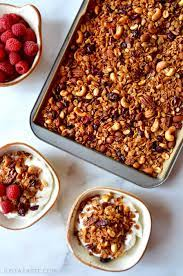

Homemade Granola

Sourced from Cookie and Kate
Healthy and delicious homemade granola recipe for breakfast or snacks
Ingredients
- 4 cups rolled oats
- 1 1/2 raw nuts or seeds
- 1 teaspoon salt
- 1/2 teaspoon ground cinnamon
- 1/2 cup melted oil (coconut or olive preferred)
- 1/2 cup maple syrup or honey
- 1 teaspoon vanilla extract
- 2/3 cup dried fruit
- Optional : 1/2 cup chocolate chips or coconut flakes
Instructions
- Preheat oven to 350 degrees Fahrenheit and line a large
baking sheet with parchment paper
- In a large mixingbowl, combine oats, nuts and or seeds, salt
and cinnamon.
- Pour in oil, maple syrup and vanilla.
Mix well until every oat and nut is lightly coated.
Pour the granola onto your prepared pan and use a large
spoon to spread it in an even layer.
- Bake until lightly golden, about 21 to 24 minutes,
stirring halfway. The granola will further crisp as it cools.
- Let the granola cool completely undisturbed (45+ minutes)
Top with the dried fruit or chocolate chips (optional)
Break the granola into pieces with your hands if you want to
retain big chunks or stir with a spoon otherwise.
- Store the granola in an airtight container at room
temperature for 1 to 2 weeks, or in a sealed freezer bag
in the freezer up to 3 months.
Return to main page